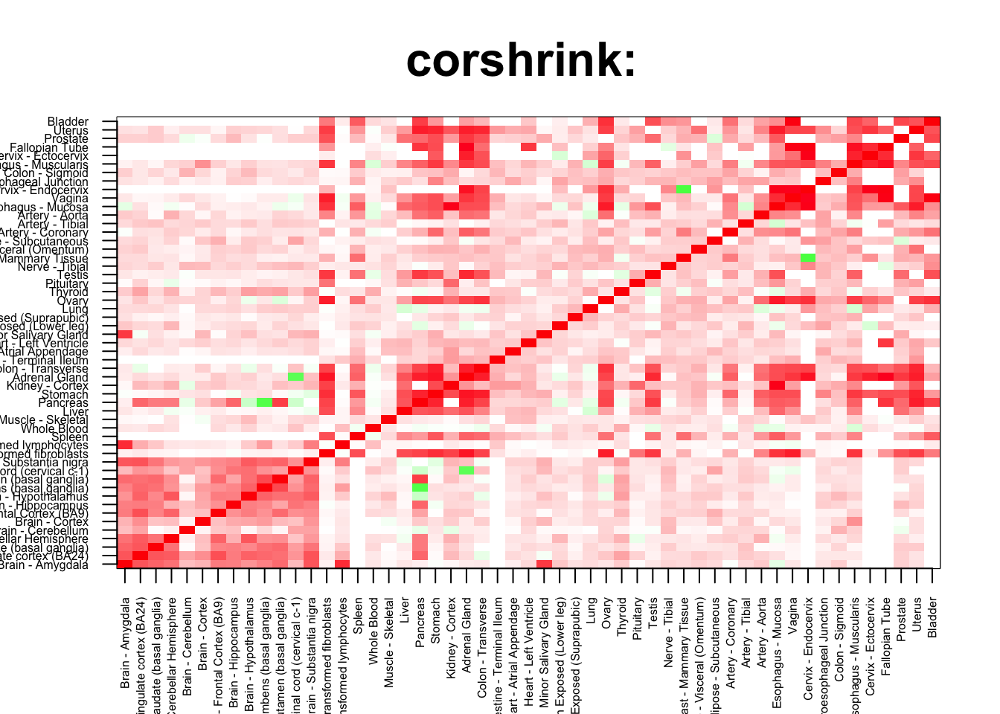
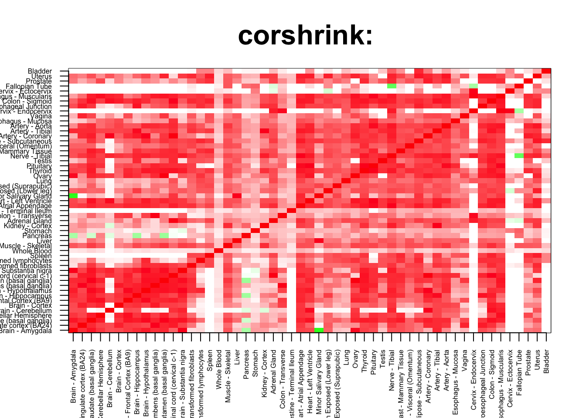

rm(list=ls())
corshrink_data <- get(load("../output/genewide_ash_out_tissue_mat.rda"))
cor_data <- get(load("../output/cor_tissues_non_ash_voom_pearson.rda"))common_samples <- get(load("../output/common_samples.rda"))
tissue_labels <- read.table(file = "../data/GTEX_V6/samples_id.txt")[,3]
#library(data.table)
#data <- data.frame(fread("../data/GTEX_V6/cis_gene_expression.txt"))
#matdata <- t(data[,-c(1,2)])
gene_names <- as.character(read.table(file = "../data/GTEX_V6/gene_names_GTEX_V6.txt")[,1])
gene_names_1 <- as.character(sapply(gene_names, function(x) return(strsplit(x, "[.]")[[1]][1])))
U <- unique(tissue_labels)tab <- array(0, dim(corshrink_data)[3])
stomach_pancreas_2_set <- match(c("Stomach", "Pancreas"), U)
for(m in 1:dim(corshrink_data)[3]){
temp <- corshrink_data[stomach_pancreas_2_set, stomach_pancreas_2_set, m]
temp1 <- corshrink_data[order_index[-(1:13)], order_index[-(1:13)],m]
tab[m] <- median(temp[row(temp) > col(temp)]) - median(temp1[row(temp1) > col(temp1)])
}
ordering_high <- order(tab, decreasing = TRUE)[1:100]
ordering_low <- order(tab, decreasing = FALSE)[1:100]top_gene <- gene_names_1[ordering_high[1]]
col=c(rev(rgb(seq(1,0,length=1000),1,seq(1,0,length=1000))),
rgb(1,seq(1,0,length=1000),seq(1,0,length=1000)))
image(as.matrix(corshrink_data[order_index,order_index, ordering_high[1]]),
col=col, main=paste0("corshrink: "), cex.main=2,
xaxt = "n", yaxt = "n", zlim=c(-1,1))
axis(1, at = seq(0, 1, length.out = 53), labels = U[order_index], las=2, cex.axis = 0.5)
axis(2, at = seq(0, 1, length.out = 53), labels = U[order_index], las=2, cex.axis = 0.5)
bottom_gene <- gene_names_1[ordering_low[1]]
col=c(rev(rgb(seq(1,0,length=1000),1,seq(1,0,length=1000))),
rgb(1,seq(1,0,length=1000),seq(1,0,length=1000)))
image(as.matrix(corshrink_data[order_index,order_index, ordering_low[1]]),
col=col, main=paste0("corshrink: "), cex.main=2,
xaxt = "n", yaxt = "n", zlim=c(-1,1))
axis(1, at = seq(0, 1, length.out = 53), labels = U[order_index], las=2, cex.axis = 0.5)
axis(2, at = seq(0, 1, length.out = 53), labels = U[order_index], las=2, cex.axis = 0.5)
high_stomach_pancreas_2_genes <- gene_names_1[ordering_high]
low_stomach_pancreas_2_genes <- gene_names_1[ordering_low]
write.table(cbind.data.frame(high_stomach_pancreas_2_genes), quote = FALSE, file = "../utilities/stomach_pancreas_2/high_stomach_pancreas_2.txt", row.names = FALSE, col.names = FALSE)
write.table(cbind.data.frame(low_stomach_pancreas_2_genes), quote = FALSE, file = "../utilities/stomach_pancreas_2/low_stomach_pancreas_2.txt", row.names = FALSE, col.names = FALSE)tab <- read.delim("../utilities/stomach_pancreas_2/pathway_high.tab")
head(cbind.data.frame(tab$pathway, tab$q.value), 10)## tab$pathway tab$q.value
## 1 Striated Muscle Contraction 8.218403e-05
## 2 Striated Muscle Contraction 1.082773e-03
## 3 Tight junction - Homo sapiens (human) 1.026726e-01
## 4 Protein methylation 1.026726e-01
## 5 miR-targeted genes in leukocytes - TarBase 1.026726e-01
## 6 VEGFR2 mediated vascular permeability 1.026726e-01
## 7 RNA Polymerase I Chain Elongation 1.026726e-01
## 8 vegf hypoxia and angiogenesis 1.026726e-01
## 9 B-WICH complex positively regulates rRNA expression 1.026726e-01
## 10 Muscle contraction 1.026726e-01tab <- read.delim("../utilities/stomach_pancreas_2/GO_high.tab")
head(cbind.data.frame(tab$term_name, tab$q.value), 10)## tab$term_name tab$q.value
## 1 heterocyclic compound binding 8.094133e-07
## 2 poly(A) RNA binding 1.109173e-06
## 3 organic cyclic compound binding 8.094133e-07
## 4 muscle myosin complex 2.582827e-05
## 5 actin-mediated cell contraction 2.200078e-04
## 6 RNA binding 4.789302e-05
## 7 intracellular part 9.075182e-05
## 8 myosin II complex 9.483134e-05
## 9 muscle contraction 4.541178e-04
## 10 actin filament-based movement 4.541178e-04tab <- read.delim("../utilities/stomach_pancreas_2/pathway_low.tab")
head(cbind.data.frame(tab$pathway, tab$q.value), 10)## tab$pathway
## 1 Nicotinate and nicotinamide metabolism - Homo sapiens (human)
## 2 Nicotinate and Nicotinamide Metabolism
## 3 Metabolism
## 4 Nicotinate metabolism
## 5 Tryptophan degradation
## 6 mitochondrial L-carnitine shuttle
## 7 NAD Biosynthesis II (from tryptophan)
## 8 superpathway of tryptophan utilization
## 9 Metabolism of water-soluble vitamins and cofactors
## 10 Tryptophan metabolism
## tab$q.value
## 1 9.191846e-05
## 2 2.530199e-04
## 3 5.135553e-04
## 4 5.135553e-04
## 5 5.135553e-04
## 6 1.195125e-03
## 7 1.641803e-03
## 8 1.641803e-03
## 9 1.641803e-03
## 10 1.641803e-03tab <- read.delim("../utilities/stomach_pancreas_2/GO_low.tab")
head(cbind.data.frame(tab$term_name, tab$q.value), 10)## tab$term_name
## 1 pyridine-containing compound biosynthetic process
## 2 nicotinate-nucleotide diphosphorylase (carboxylating) activity
## 3 oxidation-reduction process
## 4 pyridine nucleotide metabolic process
## 5 pyridine-containing compound metabolic process
## 6 oxidoreduction coenzyme metabolic process
## 7 quinolinate metabolic process
## 8 oxidoreductase activity
## 9 coenzyme biosynthetic process
## 10 indolalkylamine metabolic process
## tab$q.value
## 1 3.485612e-05
## 2 2.983207e-04
## 3 2.824807e-03
## 4 1.294248e-03
## 5 6.700061e-03
## 6 1.378586e-03
## 7 1.463272e-03
## 8 5.492735e-03
## 9 9.776715e-03
## 10 1.295987e-02This R Markdown site was created with workflowr